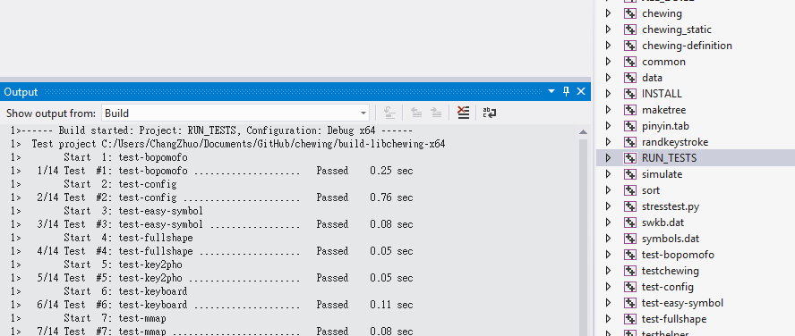
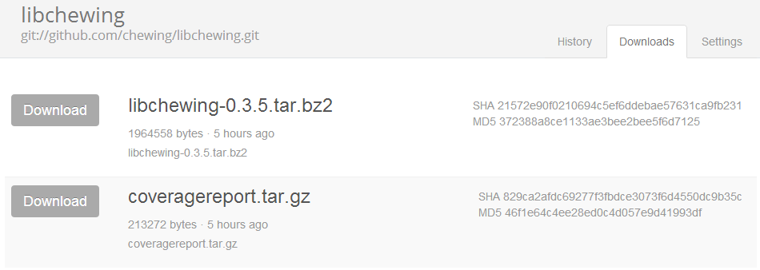

Joining libchewing Development
ChangZhuo Chen (https://github.com/czchen)
LICENSE
One day in Hacking Thursday
- czchen: 新酷音這部份的 code 是作啥用的阿
- kanru: ???
- czchen: ...
coding → building → testing → coding → ...
Send pull request
感覺 Unit Test 有點少，會不會改出問題阿？

coding → building → testing → coding → ...
Fixed
為了避免再次發生問題，來研究一下 Unit Test 吧
先加個 coverage report
dnl Enable gcov for coverage test
AC_ARG_ENABLE(
[gcov],
AS_HELP_STRING(
[--enable-gcov],
[Turn on gcov support @<:@default=no@:>@]),
AS_CASE(
[${enableval}],
[yes], [ENABLE_GCOV="true"],
[ENABLE_GCOV="false"]),
[ENABLE_GCOV="false"])
AS_IF([test x$ENABLE_GCOV = x"true"],
[AM_CFLAGS="$AM_CFLAGS --coverage"])
http://kanru.info/chewing/lcov-check/

看起來有點弱阿，應該要強化一下
那就先寫一些 Unit Test 順便熟悉一下 libchewing 的 API 吧
先隨邊抓幾個 API 來看看
CHEWING_API void chewing_set_candPerPage(ChewingContext *ctx, int n)
{
ctx->data->config.candPerPage = n;
}
CHEWING_API int chewing_get_candPerPage(ChewingContext *ctx)
{
return ctx->data->config.candPerPage;
}
candidate per page 沒有參數檢查？這樣會出事吧
其實預設 candidate per page 是 0 → 預設 divide by zero
修改預設值通常會造成一些問題，要小心修改，不過 ...
- candidate per page (0 → 10)
- preedit buffer (0 → 39)
- default select key (\0 * 10 → 1234567890)
順便把改過的 API 都加上 Unit Test
for (i = 0; i < ARRAY_SIZE(VALUE); ++i) {
chewing_set_candPerPage(ctx, VALUE[i]);
ok(chewing_get_candPerPage(ctx) == VALUE[i],
"candPerPage shall be `%d'", VALUE[i]);
// mode shall not change when set mode has invalid value.
for (j = 0; j < ARRAY_SIZE(INVALID_VALUE); ++j) {
chewing_set_candPerPage(ctx, INVALID_VALUE[j]);
ok(chewing_get_candPerPage(ctx) == VALUE[i],
"candPerPage shall be `%d'", VALUE[i]);
}
}
再加上前輩提供的 stress test script 找出 crash 的部分
commit 496cd753b7e6ce1e5c21fa574ce3e8d9cc07ed58
Author: Kuang-che Wu <kcwu@csie.org>
Date: Fri Jan 18 17:23:33 2013 +0800
Add script to run stress test
test/stresstest.py
接下來來試試在 Windows 上 build
MinGW - Minimalist GNU for Windows
用起來很簡單，只要 s/apt/mingw/
mingw-get install automake
mingw-get install autoconf
mingw-get install libtool
./autogen.sh
./configure
make
有些小問題需要注意一下
CR/LF → CR
git config core.autocrlf input
rm -rf *
git reset --hard
Windows 顯示亂碼
chcp 65001
在 Windows 上，應該要試試看 Visual Studio，不過又不想把 Visual Studio 的 project files 放到 git 上
那試試看用 CMake 好了
不過我不會 CMake，先抓個 tutorial 來看看吧
看起來只要把 build process 依照 CMake 的方式寫出來就好
以下是 libchewing build process
依照 CMake manual 上的說明把對應的 command 找出來
會遇到一些問題，不過大致上是可以 build 的
那試試看在 Windows 上用 Visual Studio Express 2012
build fail
要把 source 中 Visual Studio 不 support 的部份改掉
修改 tools 的 output directory
add_executable(sort ${TOOLS_SRC_DIR}/sort.c $<TARGET_OBJECTS:common>)
add_executable(maketree ${TOOLS_SRC_DIR}/maketree.c)
set_target_properties(${ALL_TOOLS} PROPERTIES
RUNTIME_OUTPUT_DIRECTORY ${TOOLS_BIN_DIR}
RUNTIME_OUTPUT_DIRECTORY_DEBUG ${TOOLS_BIN_DIR}
RUNTIME_OUTPUT_DIRECTORY_MINSIZEREL ${TOOLS_BIN_DIR}
RUNTIME_OUTPUT_DIRECTORY_RELEASE ${TOOLS_BIN_DIR}
RUNTIME_OUTPUT_DIRECTORY_RELWITHDEBINFO ${TOOLS_BIN_DIR}
)
把 UTF-8 string 改成 \xAA 的形式
Using UTF-8 as the internal representation for strings in C and C++ with Visual Studio
拿掉 designated initializer
然後就可以用了
cmake PATH -G "Visual Studio 11 Win64"
Unit Test 也可以用
travis-ci
https://travis-ci.org/chewing/libchewing只要把 .travis.yml 加 到 project 內就可以用了
travis-ci 會 build 下列幾種組合
- gcc + autotools
- clang + autotools + disable-binary-data
- gcc + cmake + valgrind
- clang + cmake + address sanitizer
drone.io
https://drone.io/github.com/chewing/libchewing設定 Commands
sudo apt-get install -qq lcov texinfo
./autogen.sh
./configure --enable-gcov
make dist
make check
scripts/lcov.sh
tar czf coveragereport.tar.gz coveragereport
設定 Artifacts
coveragereport.tar.gz
libchewing-*.tar.gz
就可以產生 package 和 coverage report
https://drone.io/github.com/chewing/libchewing/files Launchpad
https://launchpad.net/~chewing/+archive/chewing

Stress Test Script
commit 496cd753b7e6ce1e5c21fa574ce3e8d9cc07ed58
Author: Kuang-che Wu <kcwu@csie.org>
Date: Fri Jan 18 17:23:33 2013 +0800
Add script to run stress test
test/stresstest.py
We are hiring
Send a pull request to https://github.com/chewing/libchewing